From the Horn of Africa
The Borana are a Cushitic people and part of the vast Oromo nation, originating from the highlands of Ethiopia and the Horn of Africa. They belong to the Eastern Cushitic branch of the Afroasiatic language family — an ancient linguistic group predating both the Bantu and Nilotic migrations into East Africa.
The Borana migrated southward into present-day northern Kenya centuries ago, driven by drought, expanding populations, and inter-clan competition for grazing lands. They settled primarily in the Marsabit, Moyale, Isiolo, and Wajir counties of Kenya, where the semi-arid landscape demanded and shaped a specialized pastoral lifestyle. Their resilience in such environments stands as testimony to profound ecological knowledge passed down through generations.
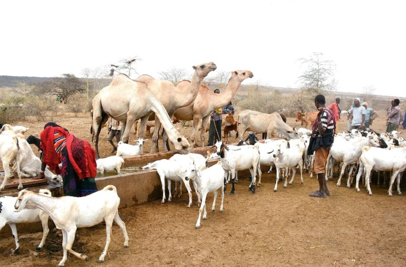
The Borana: Keepers of the Gadaa
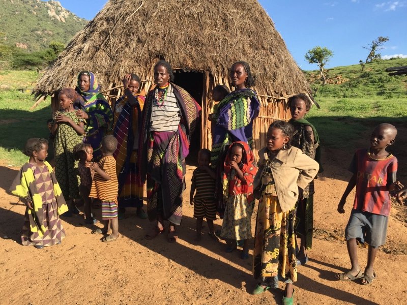
Songs, Stars & Sacred Wells
Borana culture is deeply oral. Poetry (siinqee), songs (weedduu), and proverbs (jechoota) encode history, moral values, and ecological wisdom. Ceremonies marking each stage of the Gadaa cycle — births, graduations, harvests — are accompanied by communal singing and dance.
Sacred wells (ela) are the spiritual and social heart of Borana communities. The ritual singing that accompanies cattle watering at these deep stone wells (singing wells) has been recognized internationally as a remarkable cultural heritage. Men sing to their cattle in rotating shifts as they are lowered into ancient wells — a practice that reflects both religious devotion and ecological management.
Traditional Clothing
Borana attire is adapted to the hot, arid climate — lightweight cottons, leather, and camel-hair garments adorned with distinctive beadwork reflecting Cushitic aesthetic traditions.
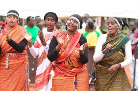
Women's Attire
Borana women traditionally wear long wraps (haadha) in bright cotton, head-scarves, and elaborate bead necklaces. Silver jewelry, including large hoop earrings and forehead ornaments, signals marital status and is given at key life events.

Men's Dress
Borana men traditionally wear white cotton garments — a kuta (toga-like wrap) — with sandals made from camel hide. Warriors and elders are distinguished by their distinctive walking sticks, copper bangles, and the Gadaa grade staff which marks their social position.
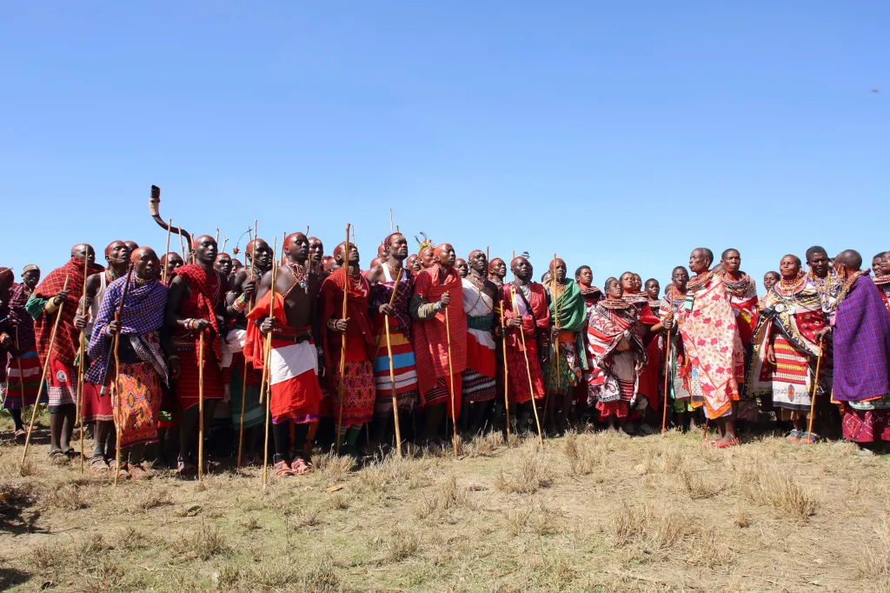
Ceremonial Dress
During Gadaa graduation ceremonies and major festivals, men wear elaborate headdresses of bird feathers and carry ceremonial staffs. Women apply henna patterns and wear their finest silver jewelry at these occasions.
Traditional Foods
Borana cuisine is built around pastoralist abundance — camel milk, goat meat, and cattle products form the dietary foundation. Fresh and fermented milk (dakkee) is the most important daily food, consumed in enormous quantities and serving both nutritional and social bonding functions.
Nyiru (roasted meat) and maraq (meat broth) are prepared for celebrations and important visitors. Sorghum porridge (uji) and flatbreads are staple carbohydrates. During droughts, blood drawn from live cattle (mixed with milk) provided emergency nutrition — a practice found across East African pastoralist communities. Food sharing with guests is a sacred obligation in Borana culture.
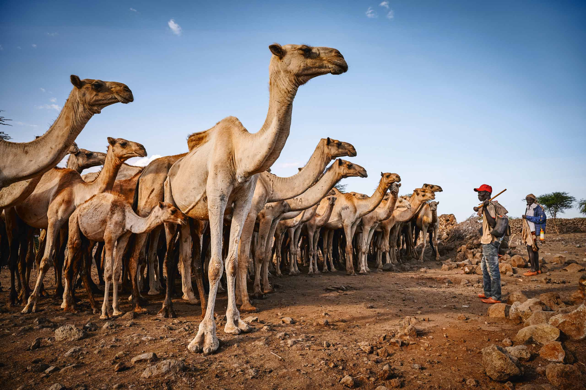
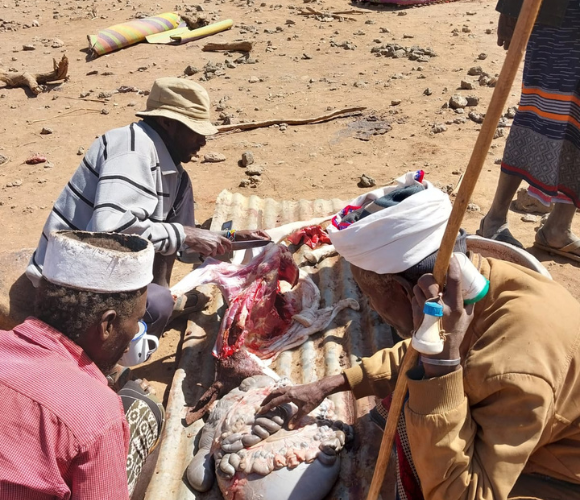
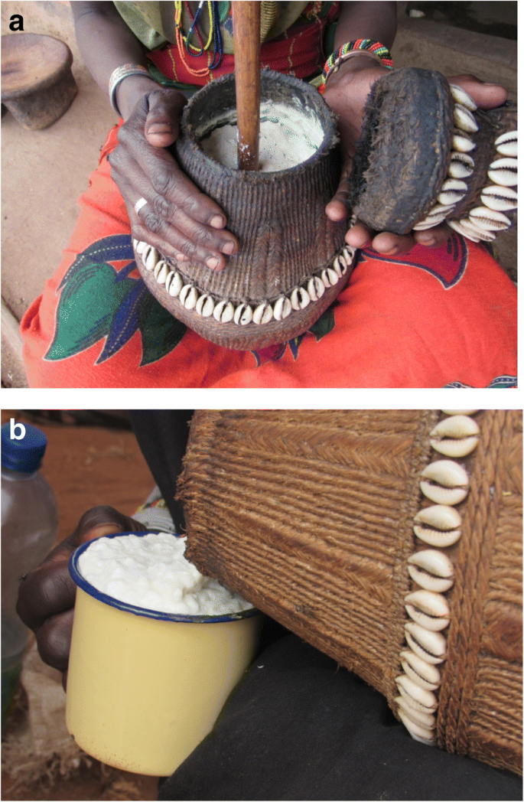
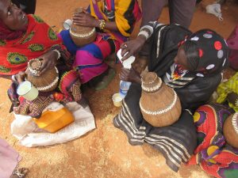
Pastoral Economy
The Borana are quintessential pastoralists. Their economy revolves entirely around livestock — camels, cattle, goats, and sheep are not merely economic assets but stores of wealth, social currency, and spiritual significance.
Today, Borana communities are adapting to changing climates, with some engaging in small-scale trade, wildlife conservation partnerships, and cross-border livestock markets with Ethiopia and Somalia.
Livestock Herding
Camels, cattle, goats, and sheep form the primary economic base. The size of one's herd directly equates to wealth, status, and social influence within the Borana system.
Water Management
The Borana developed sophisticated communal water management systems around deep stone wells (ela), managing access and rotation through Gadaa governance structures.
Trade & Barter
Borana traded livestock and animal products with neighboring Somali, Rendille, and Bantu communities in exchange for grain, metalwork, and other goods unavailable in arid lands.
Conservation
Modern Borana communities are increasingly involved in wildlife conservancy programs around Marsabit and Mathews Range, blending traditional land knowledge with conservation economics.
The Gadaa System
The Gadaa is one of Africa's most sophisticated indigenous democratic governance systems, recognized by UNESCO as an Intangible Cultural Heritage of Humanity. It divides the male population into age-sets of 8-year cycles, through which men progress from childhood to senior elderhood, each grade carrying specific roles and responsibilities.
Power alternates between grades on a regular cycle, preventing the accumulation of permanent authority by any individual or clan. The Abba Gadaa (Father of the Gadaa) serves as head of state for one 8-year term only, making this system a uniquely term-limited democratic governance structure centuries before modern democracies.
Democratic Term Limits
The Abba Gadaa governs for exactly 8 years, then power transfers to the next grade — an ancient form of democratic transition of power.
Legislation & Law
Laws (seera) are enacted through the Gadaa assembly (gumi gayo) where all adult men participate in decision-making through consensus.
Women's Role (Siinqee)
The siinqee institution gave women ceremonial authority and the right to strike laws enacted without their consultation — an early form of women's rights protection.
UNESCO Recognition
In 2016, the Gadaa system was inscribed on UNESCO's Representative List of the Intangible Cultural Heritage of Humanity — a global recognition of its significance.
Life Among the Borana
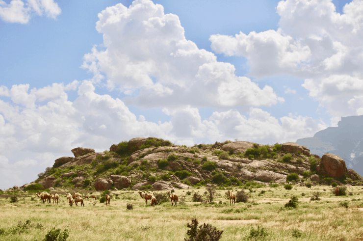
Northern Lands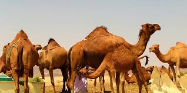
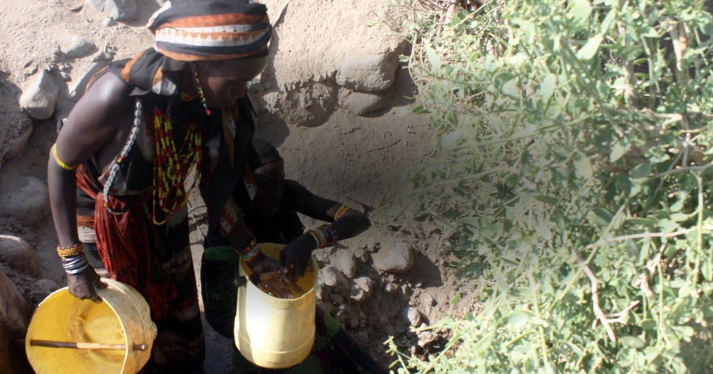
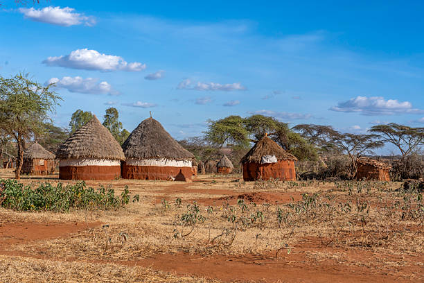
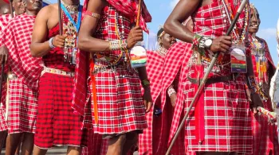